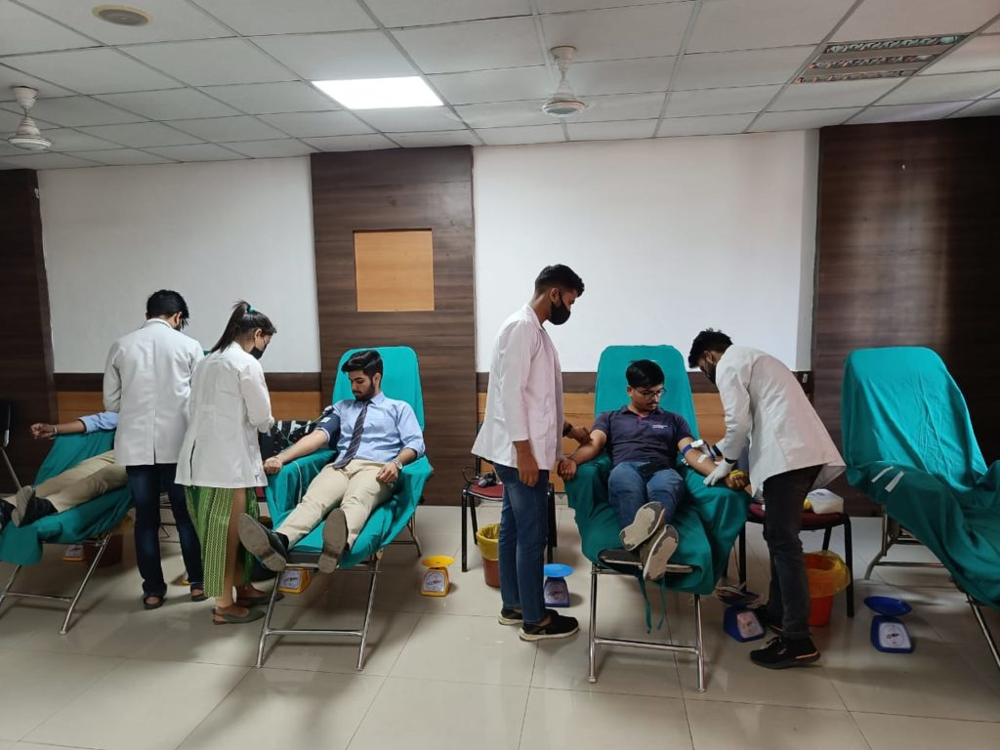

To inculcate national integration in the Youth of our country
An awareness on the care of their own health and that of others
The understanding and acceptance of civic responsibilities and acting accordingly with humanitarian concern, to fulfill the same
To enable the growth and development of a spirit of service and sense of duty with dedication and devotion in the minds of youth
To foster better friendly relationship with all without any discrimination